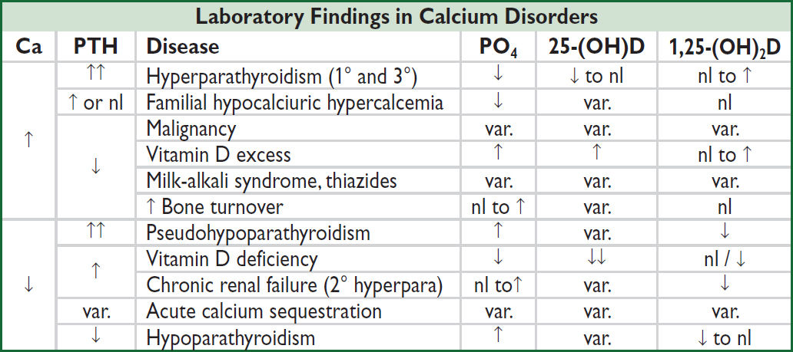
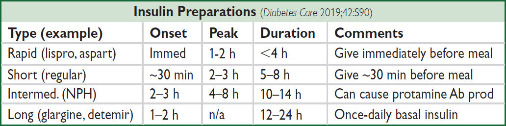
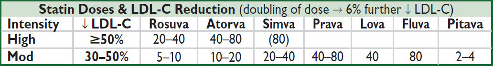

HYPOPITUITARY SYNDROMES (Lancet 2016;388:2403; JCEM 2016;11:3888)
Etiologies
• Primary: surgery, radiation (develops after avg 4–5 y), tumors (primary or metastatic), infection, infiltration (sarcoid, hemochromatosis), autoimmune, ischemia (including Sheehan’s syndrome caused by pituitary infarction intrapartum), carotid aneurysms, cavernous sinus thrombosis, trauma, medications (eg, ipilimumab), apoplexy, empty sella, genetic
• Secondary: (hypothalamic dysfunction or stalk interruption): tumors (including craniopharyngioma), infection, infiltration, radiation, surgery, trauma
Clinical manifestations
• Hormonal deficiencies: ACTH, TSH, FSH and LH, GH, prolactin, and ADH
• Panhypopituitarism: deficiencies in multiple hormonal axes
• Mass effect: headache, visual field Δs, cranial nerve palsies
Central adrenal insufficiency: ↓ ACTH
• Sx similar to 1° adrenal insufficiency (see “Adrenal Disorders”) except:
no salt cravings or hyperkalemia (b/c aldo preserved)
no hyperpigmentation (b/c ACTH/MSH is not ↑)
Central hypothyroidism: ↓ TSH
• Sx of central hypothyroidism similar to 1° (see “Thyroid Disorders”) except absence of goiter
• Dx with free T4 in addition to TSH, as TSH may be low or inappropriately normal
Hypoprolactinemia: ↓ prolactin
• Inability to lactate
Growth hormone deficiency: ↓ GH
• ↑ chronic risk for osteoporosis, fatigue, decreased lean body mass
• Dx with failure to ↑ GH w/ appropriate stimulus (eg, insulin tolerance test, glucagon stimulation, and macimorelin stimulation)
• GH replacement in adults controversial (Annals 2003;35:419; NEJM 2019;380:2551)
Central hypogonadism: ↓ FSH & LH
• Clinical manifestations: ↓ libido, impotence, oligomenorrhea or amenorrhea, infertility, ↓ muscle mass, osteoporosis
• Physical exam: ↓ testicular size; loss of axillary, pubic and body hair
• Dx with: ↓ a.m. testosterone or estradiol (also assess SHBG, esp. in obese) and ↓ or normal FSH/LH (all levels ↓ in acute illness, ∴ do not measure in hospitalized Pts)
• Treatment: testosterone or estrogen replacement vs. correction of the underlying cause
Central diabetes insipidus: ↓ ADH
• Typically from mass lesion extrinsic to sella; pituitary tumor does not typically present w/ DI
• Clinical manifestations: severe polyuria, thirst, nl to mild hyperNa (severe if ↓ access to H2O)
• Diagnostic studies: see “Sodium and Water Homeostasis”
Pituitary apoplexy (Endocr Rev 2015;36:622)
• Rapid expansion of pituitary tumor (typically adenoma) due to hemorrhage or infarction
• Sx include excruciating headache, diplopia, hypopituitarism
• Rx: immediate high-dose glucocorticoids; prompt surgical decompression if severe neurologic impairment or Δ MS; conservative management if mild
Diagnostic evaluation
• Hormonal studies
Chronic: ↓ target gland hormone + ↓ or (inappropriately) normal trophic pituitary hormone
Acute: will develop defic. in target gland hormones, but cortisol normal w/ ACTH stim
Partial hypopituitarism is more common than panhypopituitarism
• Pituitary MRI: pituitary protocol (contrast enhanced) recommended
Treatment
• Replace deficient target gland hormones
• Most important deficiencies to recognize and treat in inpatients are adrenal insufficiency and hypothyroidism; if both present, treat with glucocorticoids first, then replace thyroid hormone so as not to precipitate adrenal crisis
HYPERPITUITARY SYNDROMES
Pituitary tumors (NEJM 2020;382:937)
• Pathophysiology: adenoma → excess of trophic hormone (if tumor fxnal, but 30–40% not) and potentially deficiencies in other trophic hormones due to compression; cosecretion of PRL and growth hormone in 10% of prolactinomas
• Clinical manifestations: specific syndromes due to oversecretion of hormones (see below) ± non-specific mass effect: headache, visual Δs, diplopia, cranial neuropathies
• Workup: MRI brain pituitary protocol, hormone levels, ± visual field testing if <10 mm, no mass effect, no hormone overproduction, can f/up in 12 mos
Hyperprolactinemia (NEJM 2010;362:1219; JCEM 2011;96:273)
• Etiology
Prolactinoma (50% of pituitary adenomas)
Stalk compression due to nonprolactinoma → ↓ inhibitory dopamine → ↑ PRL (mild)
• Physiology: PRL induces lactation and inhibits GnRH → ↓ FSH & LH
• Clinical manifestations: amenorrhea, galactorrhea, infertility, ↓ libido, impotence
• Diagnostic studies
↑ PRL (✓ fasting levels), but elevated in many situations, ∴ r/o pregnancy or exogenous estrogens, hypothyroidism, dopamine agonists (eg, psych meds, antiemetics), renal failure (↓ clearance), cirrhosis, stress, ↑ carb diet. Watch for hook effect: assay artifact yielding falsely low PRL if very high serum PRL levels; retest with sample dilution.
MRI brain pituitary protocol
• Treatment
If asx (no HA, galactorrhea, hypogonadal sx) & microadenoma (<10 mm), follow w/ MRI
If sx or macroadenoma (10 mm) options include:
Medical with dopamine agonist such as cabergoline (70–100% success rate) or bromocriptine (not as well tol); side effects include N/V, orthostasis, mental fogginess
Surgical: transsphenoidal surgery (main indications: failed or cannot tolerate medical Rx, GH cosecretion or neurologic sx not improving); 10–20% recurrence rate
Radiation: if medical or surgical therapy have failed or are not tolerated
Acromegaly (↑ GH; 10% of adenomas; Nat Rev Dis Primer 2019;5:1)
• Physiology: stimulates secretion of insulin-like growth factor 1 (IGF-1)
• Clinical manifestations: ↑ soft tissue, arthralgias, jaw enlargement, headache, carpal tunnel syndrome, macroglossia, hoarseness, sleep apnea, amenorrhea, impotence, diabetes mellitus, acanthosis/skin tags, ↑ sweating, HTN/CMP, colonic polyps
• Diagnostic studies: low utility in checking random GH levels because of pulsatile secretion
↑ IGF-1 (somatomedin C); ± ↑ PRL; OGTT → GH not suppressed to <1 (<0.3 if newer assay) ng/mL; pituitary MRI to evaluate for tumor
• Treatment: surgery, octreotide (long- and short-acting preparations), dopamine agonists (if PRL cosecretion), pegvisomant (GH receptor antagonist), radiation
• Prognosis: w/ and w/o Rx ↑ mortality, risk of pituitary insufficiency, colon cancer
Cushing’s disease (↑ ACTH): 5% of adenomas; see “Adrenal Disorders”
Central hyperthyroidism (↑ TSH, ↑ α-subunit): extremely rare; see “Thyroid Disorders”
↑ FSH & LH: often non-fxn, may present as hypopituitarism b/c compression effects
Multiple Endocrine Neoplasia (MEN) Syndromes |
|
Type |
Main Features |
1 (MENIN inactiv.) |
Parathyroid hyperplasia/adenomas → hypercalcemia (~100% penetrance) Pancreatic islet cell neoplasia (gastrin, VIP, insulin, glucagon) Pituitary adenomas (fxn or non-fxn) |
2A (RET proto- oncogene) |
Medullary thyroid carcinoma (MTC) (~99%) Pheochromocytoma (~50%) Parathyroid hyperplasia → hypercalcemia (15–20%) |
2B (RET proto- oncogene) |
Medullary thyroid carcinoma (MTC) (~99%) Pheochromocytoma (~50%) Mucosal and gastrointestinal neuromas, marfanoid habitus |
4 (CDKN1B) |
Parathyroid hyperplasia/adenomas (~90%) Pituitary adenomas (fxnal or non-fxnal) Gastroenteropancreatic neuroendocrine tumors (~25%) Adrenal, kidney, reproductive organ tumors |
Autoimmune Polyglandular Syndromes (APS) (NEJM 2018;378:1132) |
|
Type |
Features |
I (APECED) |
Child onset, mucocutaneous candidiasis, hypoparathyroidism, adrenal insufficiency, AIRE mutation |
II |
Adult onset, adrenal insufficiency, autoimmune thyroid disease, diabetes mellitus type 1; polygenic |
Common Diagnostic Tests in Thyroid Disorders |
|
Test |
Comments |
Thyroid-stimulating hormone (TSH) |
Most sensitive test to detect 1° hypo- and hyperthyroidism. Used as primary screening test for thyroid disease. ↓’d by dopamine, glucocorticoids, severe illness, excessive biotin. May not be helpful in central hypothyroidism. |
Free T4 (fT4) |
Unbound T4, not influenced by TBG. Checked in a variety of thyroid states including hyperthyroidism & central hypothyroidism |
Total T3 |
Total serum concentrations of T3 (liothyronine). Useful when evaluating for hyperthyroidism. |
Antithyroid peroxidase Ab (anti-TPO) |
Antithyroid peroxidase (TPO) seen in Hashimoto’s (high titer), painless subacute thyroiditis and Graves’ disease (low titer) |
(Lancet 2001;357:619 & Thyroid 2003;13:19)
Specialized Diagnostic Tests in Thyroid Disorders |
|
Test |
Comments |
Total T4 |
Total serum concentrations (∴ influenced by TBG). Checked if concern that TSH and free T4 are not accurate. |
Free T3 |
Unbound T3, low clinical utility |
Reverse T3 |
Inactive, ↑’d in sick euthyroid syndrome. Rarely used clinically. |
Thyroid stimulating Abs |
Thyroid-stimulating Ig (TSI) and thyrotropin-binding inhibitory immunoglobulin (TBII) seen in Graves’ disease. Diagnostic of Graves’ disease in high titer. |
Thyroglobulin |
↑’d in goiter, hyperthyroidism and thyroiditis ↓’d in factitious ingestion of thyroid hormone Tumor marker for thyroid cancer only after total thyroidectomy and radioiodine therapy |
Thyroxine-binding globulin (TBG) |
↑ TBG (∴ ↑ T4): estrogen (OCP, preg.), hepatitis, opioids, hereditary ↓ TBG (∴ ↓ T4): androgens, glucocorticoids, nephrotic syndrome, cirrhosis, acromegaly, antiepileptics, hereditary |
Radioactive iodine uptake (RAIU) scan |
Useful to differentiate causes of hyperthyroidism ↑ uptake: Graves’ disease, toxic multinodular goiter or hot nodule no uptake: subacute painful (de Quervain’s) or silent thyroiditis, exogenous thyroid hormone, recent iodine load, struma ovarii or antithyroid drugs |
HYPOTHYROIDISM (Annals 2020;173:ITC1)
Etiologies
• Primary (>90% of cases of hypothyroidism; ↓ free T4, ↑ TSH)
Goitrous: Hashimoto’s thyroiditis (after hyperthyroid phase of thyroiditis), iodine deficiency, lithium, amiodarone
Nongoitrous: surgical destruction, s/p radioactive iodine or XRT, amiodarone
• Secondary (central): ↓ free T4; TSH low, inappropriately nl, or slightly high (although functionally inactive due to abnormal glycosylation); due to hypothalamic or pituitary failure
• Autoimmune destruction with diffuse lymphocytic infiltration
• Associated with other autoimmune disease and may be part of APS Type II
• ⊕ antithyroid peroxidase (anti-TPO) and antithyroglobulin (anti-Tg) Abs in >90%
Clinical manifestations (Annals 2020;173:ITC1)
• Early: weakness, fatigue, arthralgias, myalgias, headache, depression, cold intolerance, weight gain, constipation, menorrhagia, dry skin, coarse brittle hair, brittle nails, carpal tunnel syndrome, delayed DTRs (“hung up” reflexes), diastolic HTN, hyperlipidemia
• Late: slow speech; hoarseness; loss of outer third of eyebrows; myxedema (nonpitting skin thickening due to ↑ glycosaminoglycans); periorbital puffiness; bradycardia; pleural, pericardial, & peritoneal effusions; atherosclerosis
• Myxedema crisis: vide infra
Diagnostic studies (Lancet 2017;390:1550)
• ↓ free T4; ↑ TSH in 1º hypothyroidism; ⊕ antithyroid Ab (TPO) in Hashimoto’s thyroiditis
• May see hyponatremia, hypoglycemia, anemia, ↑ LDL, ↓ HDL and ↑ CK
• Screening recommended for pregnant women
Treatment of overt hypothyroidism (Endocrine 2019;66:18)
• Levothyroxine (1.5–1.7 µg/kg/d), re ✓ TSH q5–6wk, titrate q8-12 wks if TSH not in range
• Lower starting dose (0.3–0.5 µg/kg/d) if at risk for ischemic heart disease or elderly
• ↑ dose typically needed if:
poor GI absorption: meds that ↓ absorption (iron, calcium, cholestyramine, sucralfate, PPI), celiac disease, IBD
meds that accelerate T4 catabolism (eg, phenytoin, phenobarbital)
initiation of estrogen replacement; pregnancy (~30% ↑ by wk 8): TSH goals change by trimester: 1st = 0.1–4.0 mIU/L, 2nd & 3rd = gradual return of TSH to nonpregnant nl range (Thyroid 2017;3:315)
Subclinical hypothyroidism (NEJM 2017;376:2556; JAMA 2019;322:153)
• Mild ↑ TSH and normal free T4 with only subtle or no sx
• If TSH <7 or ⊖ anti-TPO Ab, ~½ resolve after 2 y (JCEM 2012;97:1962) if ↑ titers of antithyroid Abs, progression to overt hypothyroidism is ~4%/y
• No clear benefit to Rx (NEJM 2017;376:2534). In practice, follow expectantly or Rx to improve mild sx or dyslipidemia. Experts often Rx if TSH >10 mU/L, goiter, pregnancy or infertility.
Myxedema coma (ie, profound hypothyroidism; Thyroid 2014;24:1670)
• Presentation: hypothermia, hypotension, hypoventilation, Δ MS (coma rare), hyponatremia, hypoglycemia; often precipitated by infxn or major cardiopulmonary or neurologic illness
• Treatment: supportive care most important. Slow metabolism of drugs can lead to coma. Correction of hypothyroidism takes time. Load 200-400 µg T4 IV, then 50–100 µg IV qd; b/c peripheral conversion impaired, may also give 5–20 µg T3 IV q8h if unstable w/ bradycardia and/or hypothermia (T3 more arrhythmogenic); must give empiric adrenal replacement therapy first as ↓ adrenal reserves in myxedema coma.
HYPERTHYROIDISM (Annals 2020;172:ITC49)
Etiologies (Lancet 2016;388:906)
• Graves’ disease (60–80% of thyrotoxicosis)
• Thyroiditis: thyrotoxic phase of subacute (granulomatous) or painless (lymphocytic)
• Toxic adenomas (single or multinodular goiter)
• Extremely rare: TSH-secreting pituitary tumor or pituitary resistant to thyroid hormone (↑ TSH, ↑ free T4)
• Misc: amiodarone, iodine-induced, thyrotoxicosis factitia, struma ovarii (3% of ovarian dermoid tumors and teratomas), tumors (eg, choriocarcinoma) secreting hCG (weak bioactivity against TSH-R), large deposits of metastatic follicular thyroid cancer
Clinical manifestations
• Restlessness, sweating, tremor, moist warm skin, fine hair, tachycardia, AF, weight loss, ↑ frequency of stools, menstrual irregularities, hyperreflexia, osteoporosis, stare and lid lag (due to sympathetic overactivity)
• Apathetic thyrotoxicosis: seen in elderly who can present with lethargy as only sx
Laboratory testing
• ↑ free T4 and total T3; ↓ TSH (except in TSH-secreting tumors)
• RAIU scan is very useful study to differentiate causes (see table on page 7-3); cannot do if recent IV contrast or amio load b/c iodine blocks uptake, so ✓ autoantibodies instead
• Rarely need to ✓ for autoantibodies except in pregnancy (to assess risk of fetal Graves’)
• May see hypercalciuria ± hypercalcemia, ↑ Aϕ, anemia
Graves’ disease (NEJM 2016;375:1552)
• ♀:♂ ratio is 5–10:1, most Pts between 40 and 60 y at dx
• ⊕ thyroid antibodies: TSI or TBII (⊕ in 80%), anti-TPO, antithyroglobulin; ANA
• Clinical manifestations in addition to those of hyperthyroidism (see above):
Goiter: diffuse, nontender, w/ thyroid bruit
Ophthalmopathy (NEJM 2010;362:726): seen in 50%; up to 90% if formally tested. Periorbital edema, lid retraction, proptosis, conjunctivitis, diplopia (EOM infiltration); associated w/ smoking. Stare and lid lag seen in any type of hyperthyroidism.
Pretibial myxedema (3%): infiltrative dermopathy
Thyroiditis (NEJM 2003;348:2646; Med Clin North Am 2012;96:223)
• Acute: bacterial infection (very rare in U.S. except postsurgical), typically Staph/Strep spp.
• Subacute: transient thyrotoxicosis → transient hypothyroidism → normal thyroid fxn
Painful (viral, granulomatous or de Quervain’s): fever, ↑ ESR; Rx = NSAIDs, ASA, steroids
Silent (postpartum, autoimmune including Hashimoto’s, or lymphocytic): painless, ⊕ TPO Abs; if postpartum, can recur with subsequent pregnancies
Other: meds (amiodarone, lithium, TKIs, ICIs), palpation thyroiditis, post-radiation
Treatment (Thyroid 2016;26:1343; JCEM 2020;105:3704)
• β-blockers: control tachycardia (propranolol also ↓ T4 → T3 conversion)
• Graves’ disease: either antithyroid drugs or radioactive iodine (NEJM 2016;375:1552)
methimazole: 60% chance of recurrence after 1 y; side effects include pruritus, rash, arthralgia, fever, N/V and agranulocytosis in 0.5%. PTU: 2nd line (risk of hepatocellular necrosis; TID dosing; slower effect; JCEM 2007;92:2157). For both, need to ✓ LFTs, WBC, TSH at baseline and in follow-up.
radioactive iodine (RAI) (NEJM 2011;364:542): typically done as outPt; preRx w/ antithyroid drugs in selected Pts w/ CV disease or elderly to prevent ↑ thyrotoxicosis, stop 3 d before to allow RAI uptake; >75% of treated Pts become hypothyroid
surgery: less commonly chosen for Graves’, usually for Pts w/ obstructive goiter or ophthalmopathy. Adverse effects hypoparathyroidism, recurrent laryngeal nerve injury.
• Ophthalmopathy: can worsen after RAI; prophylax w/ prednisone in high-risk Pts; can be Rx’d w/ selenium, glucocorticoids, teprotumumab (IGF-1R inhibitor), radiation and/or surgical decompression of orbits (NEJM 2009;360:994)
• Toxic adenoma or toxic multinodular goiter: RAI or surgery (methimazole preRx for surgery, in selected patients before RAI)
Subclinical hyperthyroidism (NEJM 2018;378:2411)
• Mild ↓ TSH and normal free T4 with only subtle or no sx
• ~15% → overt hyperthyroidism in 2 y; ↑ risk of AF, CHD, fracture (JAMA 2015;313:2055)
• Rx controversial: consider if TSH <0.1 mU/L and ↑ risk for CV disease or osteopenic
Thyroid storm (extremely rare; JCEM 2015;2:451)
• Presentation: delirium, fever, tachycardia, systolic HTN w/ wide pulse pressure and ↓ MAP, GI symptoms; 20–30% mortality
• Diagnosis: no universally accepted criteria. Biochemical hyperthyroidism + severe sx, consider additional dx that may explain/contribute to sx.
• Treatment: β-blocker, PTU or methimazole, iopanoic acid or iodide (for Wolff-Chaikoff effect) >1 h after PTU, ± steroids (↓ T4 → T3)
NONTHYROIDAL ILLNESS (SICK EUTHYROID SYNDROME) (J Endocrinol 2010;205:1)
• TFT abnormalities in Pts w/ severe nonthyroidal illness (∴ in acute illness, ✓ TFTs only if ↑ concern for thyroid disease); may have acquired transient central hypothyroidism
• If thyroid dysfxn suspected in critically ill Pt, TSH alone not reliable; must measure total T4, free T4, & T3
• Mild illness: ↓ T4 → T3 conversion, ↑ rT3 → ↓ T3; in severe illness: ↓ TBG & albumin, ↑↑ rT3 → ↓↓ T3, ↑ degradation of T4, central ↓ TSH → ↓↓ T3, ↓↓ T4, ↓ free T4, ↓ TSH
• Recovery phase: ↑ TSH followed by recovery of T4 and then T3
• Replacement thyroxine not helpful or recommended for critically ill Pts w/ ↓ T3 and T4 unless other s/s of hypothyroidism
AMIODARONE AND THYROID DISEASE
Overview (JCEM 2021;106:226)
• 6 mg iodine per 200-mg tablet; risk of thyroid dysfunction lower with lower doses
• ✓ TSH prior to therapy, at 4-mo intervals on amio, and for 1 y after if amio d/c’d
Hypothyroidism (occurs in ~10%; more common in iodine-replete areas)
• Pathophysiology
(1) Wolff-Chaikoff effect: iodine load ↓ I– uptake, organification and release of T4 & T3
(2) inhibits T4 → T3 conversion
(3) ? direct/immune-mediated thyroid destruction
• Normal individuals: ↓ T4; then escape Wolff-Chaikoff effect and have ↑ T4, ↓ T3, ↑ TSH; then TSH normalizes (after 1–3 mo)
• Susceptible individuals (eg, subclinical Hashimoto’s, ∴ ✓ anti-TPO) do not escape effects
• Treatment: thyroxine to normalize TSH; may need larger than usual dose
Hyperthyroidism (3% of Pts on amio; ~10–20% of Pts in iodine-deficient areas)
• Type 1 = underlying multinodular goiter or autonomous thyroid tissue
Jod-Basedow effect: iodine load → ↑ synthesis of T4 and T3 in autonomous tissue
• Type 2 = destructive thyroiditis
↑ release of preformed T4 & T3 → hyperthyroidism → hypothyroidism → recovery
• Doppler U/S: type 1 w/ ↑ thyroid blood flow; type 2 w/ ↓ flow
• Treatment: not absolutely necessary to d/c amio b/c amio ↓ T4 → T3 conversion methimazole for type 1; steroids (eg, 40 mg prednisone qd) for type 2 often difficult to distinguish, so Rx for both typically initiated (JCEM 2001;86:3) consider thyroidectomy in severely ill patient
THYROID CANCER (Thyroid 2016;26:1; Endo Metab Clin NA 2019;48:23)
Thyroid nodules (JAMA 2018;319:914)
• Prevalence 5–10% (50–60% if screen with U/S), ♀ > ♂, ~7–15% malignant
• Screening U/S recommended if FHx of MEN2 or medullary thyroid cancer, personal h/o neck XRT, palpable nodules or multinodular goiter
• Features a/w ↑ risk of malig: age <30 y, h/o neck XRT, family history of thyroid cancer
• U/S features a/w benign dx: cystic nodules, “spongiform” sonographic pattern
• Worrisome findings: hypoechoic, solid, irregular borders, microCa2+, height>width, >20 mm
• Indications for FNA: >10-mm nodule w/ suspicious features
Papillary thyroid cancer
• Most common form (85% of differentiated thyroid cancers); peak incidence 30 to 50 y
• Risk factors: childhood radiation exposure, FHx in 1° relative, familial syndrome
• Low-risk, mort. 1–2% at 20 y; mets to neck LN common, but prognosis remains good
• Rx is surgery; after surgical resection, RAI in select intermediate-risk or high-risk
Follicular thyroid cancer
• Peak incidence 40 to 60 y, ♀:♂ 3:1; RFs: childhood radiation; FHx; familial syndrome
• Mortality 10–20% at 20 y; mets frequently distal due to hematogenous spread
• Hurthle cell carcinoma: pathologic dx; variant a/w poorer prognosis and ↑ recurrence rate
Anaplastic thyroid cancer (Endo Metab Clin NA 2019;48:269)
• ♀:♂ 1.5–2:1; poorly differentiated, extremely aggressive, mortality 90% at 5 y
• P/w rapidly growing fixed & hard neck mass, regional or distant spread in 90% at dx
• Rx options include surgery, radiation, trach, chemo, investigational clinical trials
Medullary thyroid cancer (Endo Metab Clin NA 2019;48:285)
• Neuroendocrine tumor of C cells, peak incidence 40 to 60 y, a/w MEN2A and MEN2B
• Most commonly solitary nodule; calcitonin production (presents with diarrhea, flushing) and level used to trend dz progression, dx w/ FNA (Se 50–80%); mortality 25–50% at 5 y
• Surgery first-line treatment
Cushing’s Syndrome (Hypercortisolism)
Cushing’s syndrome = cortisol excess
Cushing’s disease = Cushing’s syndrome 2° to pituitary ACTH hypersecretion
Etiologies of hypercortisolism
• Most commonly iatrogenic caused by exogenous glucocorticoids (though underreported)
• Cushing’s disease (60–70% of non-iatrogenic CS): ACTH-secreting pituitary adenoma (usually microadenoma) or hyperplasia
• Adrenal tumor (10–15%): adenoma or (rarely) carcinoma
• Ectopic ACTH (10–15%): SCLC, carcinoid, islet cell tumors, medullary thyroid ca, pheo
Clinical manifestations (Lancet 2006;367:1605)
• Nonspecific: glucose intolerance or DM, HTN, obesity, oligo- or amenorrhea, osteoporosis
• More specific: central obesity w/ extremity wasting, dorsocervical fat pads, spont. bruising
• Most specific: proximal myopathy, rounded facies, facial plethora, wide purple striae
• Other: depression, insomnia, psychosis, impaired cognition, hypokalemia, acne, hirsutism, hyperpigmentation (if ↑ ACTH), fungal skin infxns, nephrolithiasis, polyuria
Diagnosis
• Typically performed in outPt setting
• Very difficult as inPt b/c hypercortisolism from acute illness and hosp.
CRH, corticotropin-releasing hormone; DST, dexamethasone suppression test; UFC, urinary free cortisol
Overnight 1 mg DST = give 1 mg at 11 p.m.; ✓ 8 a.m. serum cortisol (suppression if <1.8 µg/dL); <5% false ⊕ (primarily used to evaluate subclinical Cushing’s in adrenal “incidentalomas”)
11 p.m. salivary cortisol × 2 = abnl if level ↑; 24-h UFC × 2 = abnl if level ↑, >4× ULN virtually diagnostic
48-h LD DST + CRH = 0.5 mg q6h × 2 d, then IV CRH 2 h later; ✓ serum cortisol 15 min later (⊕ = >1.4 µg/dL)
48-h LD DST = 0.5 mg q6h × 2 d; ✓ 8 a.m. serum cortisol (suppression if <1.8 µg/dL);
48-h HD DST = 2 mg q6h × 2 d; ✓ 24-h UFC at baseline & during last 24 h of dex (suppressed if <80–90% of base)
O/N HD DST = 8 mg at 11 p.m.; ✓ 9 a.m. serum cortisol (suppression if <50% from day prior)
CRH stim test = 1 µg/kg IV; ✓ cortisol and ACTH (⊕ if > 35% ↑ in ACTH or >20% ↑ in cortisol above baseline)
BIPSS, bilat. Inferior petrosal sinus vein sampling; ✓ petrosal:peripheral ACTH ratio (⊕ ≥2 basal, ≥3 after CRH)
Treatment of Cushing’s syndrome (JCEM 2015;100:2807. J Intern Med 2019;286:526)
• Surgical: resection of pituitary adenoma, adrenal tumor or ectopic ACTH-secreting tumor, or bilateral surgical adrenalectomy if unable to control source of ACTH
• Medical: ketoconazole, metyrapone, osilodrostat, cabergoline, pasireotide, or mitotane to ↓ cortisol, and/or mifepristone to block cortisol action at glucocorticoid receptor; frequently used as bridge to surgery or when surgery contraindicated
• Radiation: can do pituitary XRT, but not effective immediately (takes 6 mo to 2 y)
• Glucocorticoid replacement therapy × 6–36 mo after TSS (lifelong glucocorticoid + mineralocorticoid replacement if medical or surgical adrenalectomy)
HYPERALDOSTERONISM
Etiologies
• Primary (adrenal disorders, renin-independent increase in aldosterone; JCEM 2015;100:1) adrenal hyperplasia (60–70%), adenoma (Conn’s syndrome, 30–40%), adrenocortical cancer, glucocorticoid-remediable aldosteronism (GRA; ACTH-dep. rearranged promoter)
• Secondary (extra-adrenal disorders, ↑ aldosterone is renin-dependent)
Primary reninism: renin-secreting tumor (very rare)
Secondary reninism: renovascular disease: RAS, malignant hypertension; edematous states w/ ↓ effective arterial volume: CHF, cirrhosis, nephrotic syndrome;
hypovolemia, diuretics, T2D, Bartter’s (defective Na/K/2Cl transporter ≈ receiving loop
diuretic), Gitelman’s (defective renal Na/Cl transporter ≈ receiving thiazide diuretic)
• Nonaldosterone mineralocorticoid excess mimics hyperaldosteronism
11β-HSD defic. (→ lack of inactivation of cortisol, which binds to mineralocorticoid recept.)
Black licorice (glycyrrhizic acid inhibits 11β-HSD), extreme hypercortisolism (overwhelming 11β-HSD), exogenous mineralocorticoids
Liddle’s syndrome (constitutively activated/overexpressed distal tubular renal Na channel)
Clinical manifestations
• Mild-to-moderate HTN: 16-22% of all HTN, 11% of refractory cases (Annals 2020;173:10)
• Headache, muscle weakness, polyuria, polydipsia; no peripheral edema because of “escape” from Na retention; malignant HTN is rare
• Classically hypokalemia (but often normal), metabolic alkalosis, mild hypernatremia
Diagnosis (JCEM 2016;101:1889; Endo Metab Clin 2019;48:681; J Clin Endo Met 2021;106:2423)
• 5–10% of Pts w/ HTN; ∴ screen if HTN + hypoK, adrenal mass, refractory/early onset HTN
• Screening: ↓↓ renin, aldo >15–20 ng/dL, plasma aldo:renin ratio (>20 if 1°); obtain 8 a.m. paired values (off spirono & eplerenone for 6 wk); cut-offs arbitrary; Se var., Sp >70%
• ACEI/ARB, diuretics, CCB can ↑ renin activity → ↓ PAC/PRA ratio and βBs may ↑ PAC/PRA ratio; ∴ avoid. α-blockers generally best to control HTN during dx testing.
• Confirm with sodium suppression test (fail to suppress aldo after sodium load) oral salt load (+ KCl) × 3 d, ✓ 24-h urine (⊕ if urinary aldo >12 µg/d while urinary Na >200 mEq/d) or 2L NS over 4 h, measure plasma aldo at end of infusion (⊕ if aldo >5 ng/dL)
Treatment (SCNA 2014;94:643)
• Adenoma → adrenalectomy vs. medical Rx w/ spironolactone or eplerenone
• Hyperplasia → spironolactone or eplerenone; GRA → glucocorticoids ± spironolactone
• Carcinoma → adrenalectomy
Etiologies
• Primary = adrenocortical disease = Addison’s disease
autoimmune: isolated or in assoc w/ APS (see table on page 7-2)
infection: TB, CMV, histoplasmosis, paracoccidioidomycosis
vascular: hemorrhage (usually in setting of sepsis), adrenal vein thrombosis, HIT, trauma
metastatic disease: (90% of adrenals must be destroyed to cause insufficiency)
deposition diseases: hemochromatosis, amyloidosis, sarcoidosis
drugs: azole antifungals, etomidate (even after single dose), rifampin, anticonvulsants
• Secondary = pituitary failure of ACTH secretion (but adrenal aldosterone intact b/c RAA axis) any cause of primary or secondary hypopituitarism (see “Pituitary Disorders”)
glucocorticoid therapy (can occur after ≤2 wk of “suppressive doses”; dose effect variable; even <10 mg of prednisone daily chronically can be suppressive)
megestrol (a progestin with some glucocorticoid activity)
Clinical manifestations (Lancet 2021;397:613)
• Primary or secondary: weakness and fatigability (95%), weight loss (70%), orthostatic hypotension (60%), nausea (50%), vomiting (50%), hyponatremia (75%)
• Primary only (extra s/s due to lack of aldosterone and ↑ ACTH): marked orthostatic hypotension (because volume depleted), salt craving, hyperpigmentation (seen in creases, mucous membranes, pressure areas, nipples), hyperkalemia
• Secondary only: ± other manifestations of hypopituitarism (see “Pituitary Disorders”)
Diagnostic studies (JCEM 2016;101:364)
• Early a.m. serum cortisol: <3 µg/dL virtually diagnostic; ≥18 µg/dL generally consistent with intact adrenal function, lower cutoff w/ modern specific assays (see Appendix)
• Standard (250 µg) cosyntropin stimulation test (testing ability of ACTH → ↑ cortisol)
normal = 60-min (or 30-min) post-ACTH cortisol ≥18 µg/dL
abnormal in primary b/c adrenal gland diseased and unable to give adequate output
abnormal in chronic secondary b/c adrenals atrophied and unable to respond
(very rarely, may be normal in acute pituitary injury b/c adrenals still able to respond → use early a.m. cortisol instead)
All glucocorticoids (incl creams, inh. & drops) affect test. Must know exposure to interpret.
• Other tests (w/ guidance by endocrinologist): renin, aldosterone, insulin-induced hypoglycemia (measure serum cortisol response); metyrapone (blocks cortisol synthesis and therefore stimulates ACTH, measure plasma 11-deoxycortisol and urinary 17-hydroxycorticosteroid levels)
• Other lab abnormalities: hypoglycemia, eosinophilia, lymphocytosis, ± neutropenia
• ACTH: ↑ in 1°, ↓ or low-normal in 2°
• Imaging studies to consider
pituitary MRI to detect anatomical abnormalities
adrenal CT: small, noncalcified adrenals in autoimmune, enlarged in metastatic disease, hemorrhage, infection or deposition (although they may be normal-appearing)
Treatment
• Acute insufficiency: volume resusc. w/ normal saline + hydrocortisone IV (see below)
• Chronic insufficiency: (1) prednisone ~4–5 mg PO qam or hydrocortisone 15–25 mg PO qd (2/3 a.m., 1/3 early p.m.); (2) fludrocortisone (not needed in 2° adrenal insufficiency) 0.05–0.2 mg PO qam (JCEM 2018;103:376); (3) backup dexamethasone 4-mg IM prefilled syringe given to Pt for emergency situations
Adrenal insufficiency & critical illness (NEJM 2003;348:727; JAMA 2009;301:2362)
• Low cortisol binding proteins; ∴ dx of adrenal insufficiency problematic (NEJM 2013;368:1477)
• Adrenal insufficiency rare in most cases of shock unless adrenal infarction or bleed, Waterhouse-Friderichson, CNS or pituitary bleed
• Reasonable to collect cortisol level in HoTN Pt w/ suspicion for adrenal insufficiency
• Can consider above dx criteria, but decision for Rx should also be based on clinical assessment due to risk of false ⊖ and ⊕ results in context of altered physiology
• If concerned, initiate corticosteroids early: use hydrocortisone 100 mg IV followed by 50 mg IV q6h
• Controversial data for empiric steroids in all critically ill Pts (see “Sepsis”)
Adrenal crisis in adrenal insufficiency (NEJM 2019;381;852)
• Precipitants: preexisting adrenal insufficiency + serious infection or GI illness, bilateral adrenal hemorrhage or infarction, pituitary infarction
• Presentation: shock + anorexia, N/V, abd pain, weakness, fatigue, confusion, coma, fever
• Lab findings: hyponatremia, hyperkalemia (1°)
• Rx: hydrocortisone 100 mg IV followed by 50 mg IV q6 + IVF; do not delay for dx tests
PHEOCHROMOCYTOMA & PARAGANGLIOMA
Clinical manifestations (NEJM 2019;381:552)
• Neuroendocrine neoplasm leads to inappropriate and paroxysmal release of adrenergic agents including epinephrine, norepinephrine, and rarely dopamine
• Classic triad: episodic headaches, palpitations and profuse sweating; only 50% have paroxysmal hypertension and most Pts do not have three classic sx
• Paroxysms can be triggered by meds (eg, β-blockers), abdominal manipulation
• Up to 40% of pheos/paragangliomas thought to have underlying genetic etiology; genetic testing frequently recommended
• Associated with MEN2A/2B, von Hippel Lindau, NF1, familial paraganglioma (mutations in succinate dehydrogenase gene B, C and D), MAX or TMEM127 mutations
Diagnostic studies (JCEM 2014;99:1915)
• 24° urinary fractionated metanephrines: 98% Se, 98% Sp. Screening test of choice if low-risk (b/c false ⊕ with severe illness, renal failure, OSA, labetalol due to assay interference, acetaminophen, TCAs, medications containing sympathomimetics).
• Plasma fractionated metanephrines: 97% Se, 91% Sp. Screening test of choice if high risk, but ↑ rate of false ⊕ in low-prevalence population. False ⊕ rate lower if patient supine for 30 min (estimated 2.8× ↑ false ⊕ if seated).
• Adrenal CT or T2-weighted MRI; PET for known metastatic disease or to localize nonadrenal mass but usually easy to find; consider MIBG scintigraphy if CT/MRI ⊖
• Consider genetic testing in all Pts (J Intern Med 2019;285:187)
Treatment
• α-blockade first (usually phenoxybenzamine) ± β-blockade (often propranolol) → surgery
• Preoperative volume expansion is critical due to possible hypotension after tumor excision
ADRENAL INCIDENTALOMAS
Epidemiology
• 4% of Pts undergoing abdominal CT scan have incidentally discovered adrenal mass; prevalence ↑ with age
Differential diagnosis
• Nonfunctioning mass: adenoma, cysts, abscesses, granuloma, hemorrhage, lipoma, myelolipoma, primary or metastatic malignancy
• Functioning mass: pheochromocytoma, adenoma (cortisol, aldosterone, sex hormones), other endocrine tumor, carcinoma
Hormonal workup (EJE 2016;175:G1; NEJM 2021;384:1542)
• Rule out subclinical Cushing’s syndrome in all Pts using 1 mg overnight DST (Sp 91%). Abnormal results require confirmatory testing.
• Rule out hyperaldosteronism if hypertensive w/ plasma aldo & renin (see above)
• Rule out pheochromocytoma in ALL Pts (b/c of morbidity unRx’d pheo) using 24-h urine fractionated metanephrines or plasma fractionated metanephrines
Malignancy workup
• CT and MRI characteristics may suggest adenoma vs. carcinoma
Benign features: unenhanced CT <10 Hounsfield units or CT contrast-medium washout >50% at 10 min; size <4 cm; smooth margins, homogenous and hypodense appearance; can follow such incidentalomas w/ periodic scans
Suspicious features: size ≥4 cm or ↑ size on repeat scan; >10 Hounsfield units on CT, irregular margins, heterogeneous, dense or vascular appearance; h/o malignancy or young age. Such incidentalomas warrant resection or repeat scan at short interval.
• Rule out metastatic cancer (and infection) in Pts w/ h/o cancer; ~50% of adrenal incidentalomas are malignant
Follow-up
• If hormonal workup ⊖ and appearance benign, no further follow-up imaging needed, but controversial (Annals 2019;171:107)

Pitfalls in measuring calcium
• Physiologically active Ca is free or ionized (ICa). Serum Ca reflects total calcium (bound + unbound) and ∴ influenced by albumin (main Ca-binding protein).
• Corrected Ca (mg/dL) = measured Ca (mg/dL) + {0.8 × [4 – albumin (g/dL)]}
• Alkalosis will cause more Ca to be bound to albumin (∴ total Ca may be normal but ↓ ICa)
• Best to measure ionized Ca directly (but accuracy is lab dependent)
HYPERCALCEMIA
Etiologies of Hypercalcemia |
|
Category |
Etiologies |
Hyperparathyroidism (HPT) (NEJM 2018;379:1050; Lancet 2018;391:168) |
1°: adenoma (85%), hyperplasia (15–20%; spont. vs. MEN1/2A), carcinoma (<1%), meds (Lithium → ↑ PTH) 3°: after long-standing 2° hyperparathyroidism (as in renal failure) → autonomous nodule develops, requires surgery |
Familial hypocalciuric hypercalcemia (FHH) |
Inact. mut. in Ca-sensing receptor (FHH1), Gα11 (FHH2), AP2S1 (FHH3) → ↑ Ca set point; ± mild ↑ PTH Acquired form due to autoAb vs. Ca-sensing receptor (rare) FECa [(24-h UCa/serum Ca) / (24-h UCr/serum Cr)] <0.01 |
Malignancy (NEJM 2022;386:1443) |
PTH-related peptide (PTHrP) → humoral ↑ Ca of malignancy (eg, squamous cell cancers, renal, breast, bladder) Cytokines → ↑ osteoclast activity (eg, hematologic malig) ↑ 1,25-(OH)2D (eg, rare lymphomas) Local osteolysis (eg, breast cancer, myeloma) |
Vitamin D excess |
Granulomas (sarcoid, TB, histo, GPA) → ↑ 1-OHase → ↑ 1,25-(OH)2D. Vitamin D intoxication. |
↑ Bone turnover |
Hyperthyroidism, immobilization + Paget’s disease, vitamin A |
Miscellaneous |
Thiazides; Ca-based antacids or massive dairy consumption (milk-alkali syndrome); adrenal insufficiency |
Among inPts w/ hypercalcemia: 45% have cancer, 25% 1° HPT, 10% CKD → 3° HPT |
|
(JCEM 2005;90:6316; NEJM 2013;368:644)
Clinical manifestations (“bones, stones, abdominal groans, and psychic moans”)
• Hypercalcemic crisis (usually when Ca >13–15): polyuria, dehydration, ΔMS
Ca toxic to renal tubules → blocks ADH activity, causes vasoconstriction and ↓ GFR → polyuria but Ca reabsorption → ↑ serum Ca → ↑ nephrotoxicity and CNS sx
• Osteopenia, fractures, and osteitis fibrosa cystica (latter seen in severe hyperpara. only → ↑ osteoclast activity → cysts, fibrous nodules, salt & pepper appearance on X-ray)
• Nephrolithiasis, nephrocalcinosis, nephrogenic DI
• Abdominal pain, anorexia, nausea, vomiting, constipation, pancreatitis, PUD
• Fatigue, weakness, depression, confusion, coma, ↓ DTRs, short QT interval
• 1° HPT: 80% asx, 20% nephrolithiasis, osteoporosis, etc.
Diagnostic studies
• Hyperparathyroidism (HPT) and malignancy account for 90% of cases of ↑ Ca; HPT more likely if asx or chronic; malignancy (usually overt) more likely if acute or sx
• Ca, alb, ICa, PTH (may be inapprop. normal in 1° HPT & FHH; JAMA 2014;312:2680), PO4
↑ or high nl PTH: Ca/Cr clearance ratio <0.01 → FHH
↓ PTH: ✓ PTHrP, Aϕ, & search for malig (eg, CT, mammogram, SPEP/UPEP) and ✓ vit D: ↑ 25-(OH)D → meds; ↑ 1,25-(OH)2D → granuloma (✓ CXR, ACE, r/o lymph)
Treatment of asymptomatic 1° HPT (JCEM 2014;99:3561; JAMA 2020;323:1186)
• Surgery if: age <50 y; serum Ca >1 mg/dL >ULN; CrCl <60 mL/min, DEXA T score <–2.5
• If surgery declined/deferred, can Rx with cinacalcet (↓ Ca & PTH but may not ↑ BMD)
• If not yet candidate for surgery: ✓ serum Ca & Cr annually and BMD q2y
HYPOCALCEMIA
Etiologies of Hypocalcemia |
|
Category |
Etiologies |
Hypoparathyroidism (NEJM 2019;380:1738; JCEM 2020;105:1722) |
Iatrogenic (s/p thyroidectomy, rarely after parathyroidectomy); sporadic; familial (APS1, activating Ca-sensing receptor mutations; see page 7-2); Wilson’s, hemochromatosis; hypoMg (↓ secretion and effect); activating Ca-sensing receptor autoAb |
Pseudo- hypoparathyroidism (Endo Metab Clin North Am 2018;47:865) |
1a, 1b, & 1c: PTH end-organ resistance (∴ ↑ serum PTH) 1a & 1c: + skeletal abnormalities, short stature & developmental delay 1b: w/o extra features Pseudopseudohypoparathyroidism = 1a mutation inherited from father, no hormonal abnormalities |
Vit D defic. or resist (NEJM 2011;364:248; JCEM 2012;97:1153) |
Nutritional/sunlight deprivation; GI disease/fat malabs.; drugs (anticonvulsants, rifampin, ketoconazole, 5-FU/leucovorin); genetic (1α-hydroxylase, VDR mutations). Deficiency more common. |
Chronic renal failure |
↓ 1,25-(OH)2D production from elevated FGF23, ↑ PO4 from ↓ clearance |
Accelerated net bone formation |
Postparathyroidectomy, Paget’s disease (JBMR 2019;34:579), osteoblastic metastases |
Calcium sequestration |
Pancreatitis, citrate excess (after blood transfusions), acute ↑↑ PO4 (ARF, rhabdomyolysis, tumor lysis), bisphosphonates |
Clinical manifestations
• Neuromuscular irritability: perioral paresthesias, cramps, ⊕ Trousseau’s (inflation of BP cuff ≥3 min → carpal spasm), ⊕ Chvostek’s (tapping facial nerve → contraction of facial muscles), laryngospasm; irritability, depression, psychosis, seizures, ↑ QT
• Rickets and/or osteomalacia: chronic ↓ vit D → ↓ Ca, ↓ PO4 → ↓ bone/cartilage mineralization, growth failure, bone pain, muscle weakness
• Renal osteodystrophy: osteomalacia [↓ mineralization of bone due to ↓ Ca and 1,25-(OH)2D] & osteitis fibrosa cystica (due to ↑ PTH), adynamic bone disease or mixed uremic osteodystrophy; dx by bone biopsy
Diagnostic studies
• Ca, alb, ICa, PTH, 25-(OH)D, 1,25-(OH) 2D (if renal failure or rickets), Cr, Mg, PO4, Aϕ, UCa
Treatment (also treat concomitant vitamin D deficiency; Endocrine 2020;69:485)
• Severely symptomatic: Ca gluconate (1–2 g IV over 20 min) + oral Ca + calcitriol (but takes hrs to work) ± Mg (50–100 mEq/d); 10% CaCl2 in codes or via CVL
• Consider Ca gtt or PO to follow b/c effect of IV bolus typically lasts only a few hours
• Chronic (depends on etiol.): oral Ca (1–3 g/d; citrate better absorbed than carbonate, esp. if achlorhydria or on PPI) and typically calcitriol (0.25–2 mcg/d), and replete vit. D defic. Consider thiazide to ↓ urinary Ca or recombinant PTH 1-84 (if hypopara).
• Chronic renal failure: phosphate binder(s), oral Ca, calcitriol or analogue
Definition (Diabetes Care 2022;45:S256)
• Either HbA1c ≥6.5, fasting glc ≥126 mg/dL, or glc 2 h after OGTT ≥200 mg/dL × 2 (for any test) or single random glc ≥200 mg/dL w/ classic sx of hyperglycemia; all tests equally reasonable (nb, may be ⊕ on one test but not another); OGTT preferred during preg
• Blood glc higher than normal, but not frank DM (“prediabetics,” ~40% U.S. population)
HbA1c 5.7–6.4%, impaired fasting glc (IFG) 100–125 mg/dL, or 2 h prandial glc 140–199.
Preventing progression to DM: diet/exercise (58% ↓), metformin (31% ↓; NEJM 2002;346:393)
Categories
• Type 1 (Lancet 2018;391:2449): islet cell destruction; absolute insulin deficiency; ketosis in absence of insulin; prevalence 0.4%; usual onset in childhood but can occur throughout adulthood; ↑ risk if ⊕ FHx; HLA associations; anti-GAD, anti-islet cell & anti-insulin autoAb
• Type 2 (Lancet 2017;389:2239): insulin resistance + relative insulin ↓; prevalence 6%; onset generally later in life; no HLA assoc.; risk factors: age, ⊕ FHx, obesity, sedentary lifestyle
• Type 2 DM p/w DKA (“ketosis-prone diabetes” or “Flatbush diabetes”): most often seen in nonwhite, ± anti-GAD Ab, eventually may not require insulin (Endo Rev 2008;29:292)
• Mature-Onset Diabetes of the Young (MODY): autosomal dom. forms of DM due to defects in insulin secretion genes; genetically and clinically heterogeneous (JCEM 2021;106:237)
• Secondary causes of diabetes: exogenous glucocorticoids, glucagonoma (3 Ds = DM, DVT, diarrhea), pancreatic (pancreatitis, hemochromatosis, CF, resection), endocrino-pathies (Cushing’s, acromegaly), gestational, drugs (protease inhibitors, atypical antiψ)
Clinical manifestations
• Polyuria, polydipsia, polyphagia with unexplained weight loss; may be asymptomatic
Diabetes Treatment Approach for Pt w/ ASCVD, HF, or CKD |
|
Med (↓ HbA1C) |
Comments |
GLP-1 receptor agonists (~1–2%) |
↑ glc-depend. insulin secretion. Delay gastric emptying. Wt ↓, N/V. ↓ CVD/MI/stroke, esp. if ASCVD. ↓ prog of albuminuria. 1st line if est. ASCVD or high ASCVD risk (age >55, LVH, arterial stenosis >50%), regardless of A1c. |
SGLT-2 inhibitors (~0.5–1%) |
↑ glucosuria. Wt ↓. ↑ genital infxn. ? caution if PAD. ↓ CVD/HHF. ↓ prog. of renal disease. ± ↓ MI if ASCVD. 1st line if HF, proteinuric CKD, regardless of A1c. |
Metformin (~1–1.5%) |
↓ hepatic gluconeogenesis. Mild wt ↓. Rare lactic acidosis. Caution if GFR 30–45; contra. if <30. Poss CV benefit. Historically 1st line Rx, although some debate given benefit of GLP1RA & SGLT2i. |
Additional Diabetes Treatment Options |
|
DPP-4 inhibitors (~0.5–1%) |
Block degrad. GLP-1 & GIP → ↑ insulin. ↑ risk of HF w/ saxagliptin (NEJM 2013;369:1317), not w/ others. |
Sulfonylureas (SU) (~1.5%) |
↑ insulin secretion. Hypoglycemia; wt gain. |
Thiazolidinediones (TZD) (~1%) |
↑ insulin sens. in adipose & muscle. Wt ↑, fluid retention & CHF. Hepatox. ↑ MI w/ rosiglitazone? Contraindic. in HF & liver dysfxn. |
Glinides (~1%) |
↑ insulin secretion; hypoglycemia; wt gain |
α-gluc. inhib (~0.5%) |
↓ intestinal CHO absorption. Abd pain, flatulence. |
Pramlintide (~0.5%) |
Delays gastric emptying & ↓ glucagon. N/V |
Insulin (variable) |
↓↓ glc; wt gain. Mandatory in T1D; consider in T2D if oral Rx inadeq. Weekly vs. daily w/ similar glycemic ctrl (NEJM 2020;383:2107). |
Tirzepatide (~2–2.5%) |
Dual glucose-dependent insulinotropic polypeptide-GLP-1 receptor agonist. Greater ↓ in A1C & wt vs. semaglutide (NEJM 2021;385:503). Not yet FDA approved. |
Gastric bypass |
Wt ↓↓↓; can cause remission DM (NEJM 2014;370:2002) |
Lifestyle changes including weight management are foundational. Diabetes Care 2022;45:S256; NEJM 2021; 385:896. NEJM 2019;381:1995; Lancet 2019;393:31; Circ 2019;139:2022; NEJM 2019;380:2295.

Complications (NEJM 2004;350:48; 2016;374:1455; CJASN 2017;12:1366)
• Retinopathy
nonproliferative: “dot & blot” and retinal hemorrhages, cotton-wool/protein exudates
proliferative: neovascularization, vitreous hemorrhage, retinal detachment, blindness
treatment: photocoagulation, surgery, intravitreal bevacizumab injections
• Nephropathy: microalbuminuria → proteinuria ± nephrotic syndrome → renal failure. Strict BP control using ACEI or ARB; SGLT-2 inhib (NEJM 2016;375:323 & 2019;380:2295); finerenone (NEJM 2020;383:2219); low-protein diet; dialysis or transplant.
• Neuropathy: peripheral: symmetric distal sensory loss, paresthesias, ± motor loss
autonomic: gastroparesis, constipation, neurogenic bladder, erectile dysfxn, orthostasis
mononeuropathy: sudden-onset peripheral or CN deficit (footdrop, CN III >VI >IV)
• Accelerated atherosclerosis: coronary, cerebral and peripheral arterial beds
• Infections: UTI, osteomyelitis of foot, candidiasis, mucormycosis, necrotizing external otitis
• Dermatologic: necrobiosis lipoidica diabeticorum, lipodystrophy, acanthosis nigricans
Outpatient screening and treatment goals (Diabetes Care 2022;45;S83 & S144)
• ✓ HbA1C q3–6mo, goal <7% for most Pts. Goal <6.5% if low-risk hypoglycemia; ≤8% if h/o severe hypoglycemia, elderly or other comorbid.
• Microvascular complications (nephropathy, retinopathy, neuropathy) ↓↓ by strict glycemic control (NEJM 1993;329:977).
• Effect of strict glycemic control on macrovascular complications (ASCVD) more nuanced. Benefit in T1D (NEJM 2005;353:2643) & T2D, but emerged after a decade (NEJM 2015;372:2197). In shorter-term trials (~5 yrs), modest ↓ in risk of MI, but no effect on death and even ↑ in some studies, potentially because of hypoglycemia (Lancet 2009;373:1765).
• Microalbuminuria screening yearly with spot microalbumin/Cr ratio, goal <30 mg/g
• Wt loss (dietary/drugs) can regress or resolve DM (Endo Rev 2018;39:79; NEJM 2018;379:1107)
• BP ≤130/80 if high CV risk, ≤140/90 if lower risk; benefit of ACEI/ARB
• Lipids: statin initiation in all diabetics age 40–75 if LDL-C >70 (see “Lipid Disorders”)
• ASA in 2° prevention; ? role in 1°, balancing ↓ MACE & ↑ bleeding (NEJM 2018;379:1529)
• Dilated retinal exam and comprehensive foot exam
Management of hyperglycemia in inPts (for ICU: see “Sepsis”) (Clin Ther 2013;35:724)
• Identify reversible causes/precipitants (dextrose IVF, glucocorticoids, postop, ↑ carb diet)
• Dx studies: BG fingersticks (fasting, qAC, qHS; or q6h if NPO), HbA1C
• Treatment goals: avoid hypoglycemia, extreme hyperglycemia (>180 mg/dL)
• Transition to inPt:
T1D: do not stop basal insulin (can → DKA)
T2D: stopping oral DM meds generally preferred to avoid hypoglycemia or med interaction (except if short stay, excellent outPt cntl, no plan for IV contrast, nl diet). If Pt on insulin as outpt do not rely on sliding scale alone (Diabetes Care 2022;45:S244).
• Starting new insulin regimen
Basal = 0.2–0.4 U/kg/d NPH Q12h or detemir or glargine + correction insulin for BG >150 mg/dL + prandial insulin if eating: 0.05–0.1 U/kg/meal lispro, aspart, or regular
• When NPO
T1D: continue basal insulin at current dose or 75% depending on BG control
T2D: continue basal insulin at 25–75% depending on BG control and level of insulin resistance. Hold all prandial insulin.
• Discharge regimen: similar to admission regimen unless poor outPt cntl or strong reason for Δ. Arrange early insulin and glucometer teaching, prompt outPt follow-up.
DIABETIC KETOACIDOSIS (DKA)
Precipitants (the I’s)
• Insulin defic. (ie, failure to take enough insulin); Iatrogenesis (glucocorticoids; SGLT2 inhibitors—can be w/o marked hyperglycemia; Diabetes Care 2016;39:532)
• Infection (pneumonia, UTI) or Inflammation (pancreatitis, cholecystitis)
• Ischemia or Infarction (myocardial, cerebral, gut); Intoxication (alcohol, drugs)
Pathophysiology (NEJM 2015;372:546)
• Occurs in T1D (and in ketosis-prone T2D); ↑ glucagon and ↓ insulin
• Hyperglycemia due to: ↑ gluconeogenesis, ↑ glycogenolysis, ↓ glucose uptake into cells
• Ketosis due to: insulin deficiency → mobilization and oxidation of fatty acids,
↑ substrate for ketogenesis, ↑ ketogenic state of the liver, ↓ ketone clearance
Clinical manifestations (Diabetes Care 2009;32:1335 & 2016;39:S99)
• Polyuria, polydipsia, & dehydration → ↑ HR, HoTN, dry mucous membranes, ↓ skin turgor
• N/V, abdominal pain (either due to intra-abdominal process or DKA), ileus
• Kussmaul’s respirations (deep) to compensate for metabolic acidosis with odor of acetone
• Δ MS → somnolence, stupor, coma; mortality ~1% even at tertiary care centers
• ↑ Anion gap metabolic acidosis (pH <7.3 & HCO3 <18): can later develop nonanion gap acidosis due to urinary loss of ketones (HCO3 equiv.) & fluid resuscitation w/ chloride
• Ketosis: ⊕ urine and serum ketones (predominant ketone is β-OH-butyrate, but acetoacetate measured by assay; urine ketones may be ⊕ in fasting normal Pts)
• ↑ Serum glc usually >250 mg/dL (but can be euglycemic if on SGLT-2i);↑ BUN & Cr
• Hyponatremia: corrected Na = measured Na + [2.4 × (measured glc – 100)/100]
• ↓ or ↑ K (but even if serum K is elevated, usually total body K depleted); ↓ total body phos
• Leukocytosis & ↑ amylase (even if no pancreatitis)
Treatment of DKA (BMJ 2019;365:1114) |
|
R/o possible precipitants |
Infection, intra-abdominal process, MI, etc. (see above) |
Aggressive hydration |
1L NS then ~250 cc/hr, tailor to dehydration & CV status |
Insulin |
0.1 U/kg bolus followed by 0.1 U/kg/h IV Continue insulin drip until AG normal If glc <250 and AG still high → add dextrose to IVF and ↓ insulin drip to 0.02—0.05 U/kg/hr AG nl & can eat → SC insulin (overlap IV & SC 2–3 h) |
Electrolyte repletion |
K: add 20–40 mEq/L IVF if serum K <5.4; insulin promotes K entry into cells → hold insulin if K <3.3. Careful K repletion in Pts with renal failure. HCO3: consider repletion if pH <6.9 or if cardiac instability |
HYPEROSMOLAR HYPERGLYCEMIC STATE
Definition, precipitants, pathophysiology (Med Clin North Am 2017;101:587)
• Extreme hyperglycemia (w/o ketoacidosis) + hyperosm. + Δ MS in T2D (typically elderly)
• Precip same as for DKA, but also include dehydration and renal failure
• Hyperglycemia → osmotic diuresis → vol depletion → prerenal azotemia → ↑ glc, etc.
Clinical manifestations & dx studies (Diabetes Care 2014;37:3124)
• Volume depletion and Δ MS
• ↑ serum glc (usually >600 mg/dL) and ↑ meas. serum osmolality (>320 mOsm/L) effective Osm = 2 × Na (mEq/L) + glc (mg/dL)/18
• pH >7.3, no ketoacidosis; usually ↑ BUN & Cr; [Na] depends on glucose & dehydration
Treatment
• Rule-out possible precipitants; ~15% mortality due to precipitating factors
• Aggressive hydration: initially NS, then ½ NS, average fluid loss up to 8–10 L
• Insulin (eg, 10 U IV followed by 0.05–0.1 U/kg/h), target glucose ~250 until Pt alert
HYPOGLYCEMIA
Clinical manifestations (glucose <~55 mg/dL)
• CNS: headache, visual Δs, Δ MS, weakness, seizure, LOC (neuroglycopenic sx)
• Autonomic: diaphoresis, palpitations, tremor (adrenergic sx)
Etiologies
• Pts w/ diabetes: excess insulin, oral hypoglycemics, missed meals, renal failure (↓ insulin & SU clearance); β-blockers can mask adrenergic symptoms of hypoglycemia
• Pt without diabetes: low fasting glucose w/o sx can be normal
• ↑ insulin: exogenous insulin, sulfonylureas, insulinoma, anti-insulin antibodies
• ↓ glucose production: hypopituitarism, adrenal insufficiency, glucagon deficiency, hepatic failure, renal failure, CHF, alcoholism, sepsis, severe malnutrition
Postprandial, esp. postgastrectomy or gastric bypass: excessive response to glc load
↑ IGF-II: non-islet tumor (rare)
Evaluation in patients without diabetes (JCEM 2009;94:709)
• If clinically ill: take measures to avoid recurrent hypoglycemia; ✓ BUN, Cr, LFTs, TFTs, prealbumin; IGF-I/IGF-II ratio when appropriate
• If otherwise healthy: 72-h fast w/ monitored blood glc; stop for neuroglycopenic sx
• At time of hypoglycemia: insulin, C peptide (↑ w/ insulinoma and sulfonylureas, ↓ w/ exogenous insulin), β-OH-butyrate, sulfonylurea levels
• At end of fast, give 1 mg glucagon IV and measure response of plasma glc before feeding
Treatment
• Glucose tablets, paste, & fruit juice are first-line Rx for Pts who can take POs
• 25–50 g of D50 IV; if no access, glucagon 0.5–1 mg IM or SC (side effect: N/V)
Measurements
• Lipoproteins = lipid core (cholesteryl esters & triglycerides) + phospholipid surface + proteins. Include: chylomicrons, VLDL, IDL, LDL, HDL, Lp(a)
• Measure after 12-h fast; LDL typically calculated: LDL-C = TC – HDL-C – (TG/5) underestim. if TG >400 or LDL-C <70 mg/dL; ∴ directly measure LDL-C levels stable up to 24 h after ACS, then ↓ and may take 6 wk to return to nl
• PEx clues: tendon xanthomas (eg, Achilles), imply LDL >300 mg/dL; eruptive xanthomas on extensor surfaces imply TG >1500 mg/dL; xanthelasma (yellowish streaks on eyelids)
• Metabolic syndrome (≥3 of following): waist ≥40″ (♂) or ≥35″ (♀); TG ≥150 mg/dL; HDL<40 (♂) or <50 mg/dL (♀); BP ≥130/85 mmHg; fasting glc ≥100 mg/dL (Circ 2009;120:1640)
• Lp(a) = LDL particle + apo(a); concentration genetically determined; a/w CAD & AS
Dyslipidemias
• 1° (inherited causes): familial hyperchol. (1:250): defective LDL receptor; ↑↑ chol; ↑ CAD; familial hyperTG: ↑ TG & pancreatitis; familial combined hyperlipid.: ↑ chol & TG; etc.
• 2°: DM (↑ TG, ↓ HDL), hypothyroidism (↑ LDL, ↑ TG), nephrotic syndrome (↑ LDL, ↑ TG), liver failure (↓ LDL), alcohol (↑ TG, ↑ HDL), thiazides (↑ LDL, ↑ TG), protease inhib (↑ TG)
Drug Treatment |
|||
Drug |
↓ LDL |
↓ TG |
Side Effects/Comments |
Statins |
30–60% |
10–25% |
↑ ALT in 0.5–3%; ✓ before starting and then prn Myalgias <10%, rhabdo <0.1%, dose-dependent ↑ risk of DM; screen if risk factors (ATVB 2019;39:e38) |
Ezetimibe |
~24% |
— |
Well tolerated |
Bempedoic acid |
~16% |
— |
Hyperuricemia/gout; ↓ eGFR. CVOT under way. |
PCSK9i |
50–60% |
15–25% |
mAb inj SC q2-4w or siRNA inj SC q6mo |
Fibrates |
5–15% |
35–50% |
Myopathy risk ↑ w/ statin. ↑ Cr; ✓ renal fxn q6mo. |
Ω-3 FA |
5% ↑ |
25–50% |
EPA & DHA at doses of up to 4 g/d No benefit to low-dose supplementation |
Resins ↓ LDL-C by ~20%, but not well tolerated; niacin ↑ HDL-C and ↓ TG & LDL-C; no effect on CV outcomes.
Treatment of LDL-C (Lancet 2014;384:607)
• Statins: every 1 mmol (39 mg/dL) ↓ LDL-C → 22% ↓ major vascular events (CV death, MI, stroke, revasc) in individuals w/ & w/o CAD (Lancet 2010;376:1670)
• Ezetimibe: ↓ major vascular events incl MI & stroke when added to statin post-ACS, w/ magnitude of benefit consistent w/ LDL-statin relationship (IMPROVE-IT, NEJM 2015;372:2387)
• PCSK9 inhibitors: ~60% ↓ LDL-C on top of statin, as monoRx, and in FH (EHJ 2014;35:2249); ↓ CV outcomes (NEJM 2017;376:1713 & 2018;379:2097)
• In homozygous FH: apheresis; evinacumab (ANGPTL3 inhib) ↓ LDL-C by ~50% (NEJM 2020;383:711)
Treatment of other lipid fractions (Lancet 2014;384:618 & 626)
• HDL-C: low levels a/w ↑ risk of MI, but no clinical benefit shown by raising
• Triglycerides: reasonable to treat levels >500 mg/dL w/ fibrates or Ω-3 FA to ↓ risk of pancreatitis. May be a/w CAD (NEJM 2014;371:22). 4 g/d of EPA ↓ CV risk, but 2 g/d EPA + 2 g/d DHA did not despite similar ↓ TG (NEJM 2019;380:11; JAMA 2020;324:2268)
• Lp(a): PCKS9i ↓ ~25%. siRNA that ↓ ≥75% under study (NEJM 2020;382:244).
2018 ACC/AHA Cholesterol Guidelines (Circ 2019;139:e1082) |
||
Population |
Recommendation |
|
Very high-risk ASCVD* |
High-intensity statin; add EZE then PCSK9i if LDL-C ≥70 |
|
Clinical ASCVD |
High-intensity statin (? mod if >75 y), add EZE if LDL-C ≥70 |
|
LDL-C ≥190 mg/dL |
High-intensity statin; add EZE or PCKS9i if LDL-C ≥100 |
|
DM, age 40–75 y |
High-intensity statin (? moderate if no CV RFs) |
|
Age 40–75 y (and none of above); calc 10-y risk |
≥20% |
High-intensity statin |
7.5%–<20% |
Moderate-intensity statin; if uncertain consider CAC |
|
5–<7.5% |
Moderate-intensity statin reasonable |
|
<5% |
Emphasize lifestyle |
|
ASCVD incl h/o ACS, stable angina, art. revasc, stroke, TIA, PAD. *Multiple major ASCVD events (MI, stroke, sx PAD) or 1 major event + multiple high-risk conditions (age ≥65, DM, HTN, CKD, smoking, FH, prior PCI/CABG). 10-y CV Risk Score: http://my.americanheart.org/cvriskcalculator. Additional risk factors to consider: LDL-C ≥160 mg/dL, met. synd.,CKD, FHx premature ASCVD, hsCRP ≥2 mg/l, Lp(a) ≥50 mg/dL, ABI <0.9, high-risk ethnic groups.
